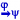

Začínáme
Systém LISp-Miner a proces DZD
Analytické procedury
- 4ft-Miner 
Pokročilé funkce
Výzkum a vývoj
Začínáme
Systém LISp-Miner a proces DZD
Analytické procedury
Pokročilé funkce
Výzkum a vývoj
Pro každý sloupec, který se má v generovaných datech objevit, je potřeba určit, jaké hodnoty a případně jaké výčty hodnot se v něm mohou vyskytovat. U sloupců s odvozenými hodnotami je pak třeba nadefinovat způsob, jak se hodnoty v něm počítají.
 : Obr. RMCharibDlg
: Obr. RMCharibDlg
Základním parametrem každého generovaného sloupce je jeho název a datový typ. Oba jsou odvozeny automaticky z podkladové tabulky.
Dalším parametrem je volba, zda má být sloupec součástí exportované výsledné tabulky (angl. Include in export). Některé sloupce mohou být potřeba při evoluci, ale není je třeba vkládat do výsledku.
Zejména na počátku evoluce je potřeba nastavit hodnoty ve sloupci. Stejně tak se hodnoty nastavují při mutacích typu Fill. Přitom se používá nastavení zde uvedených charakteristik.
Zda budou ve sloupci přípustné hodnoty pouze z daného výčtu, nebo půjde o libovolnou (číselnou) hodnotu z daného rozpětí.
Uniform nebo Gaussian). Při generování konkrétních hodnot do sloupce je dodržen povolený rozsah (rozmezí hodnot) nebo povolené hodnoty (výčet).
Způsob inicializace hodnot ve sloupci a možností jejich aktualizace:
Randomly generated values … počáteční hodnoty se nastavují zcela náhodně a i v průběhu evoluce se mohou libovolně měnit. Přitom jsou však zohledněno povolené rozmezí hodnot a zvolený typ distribuce (viz rámeček Randomly Generated Values)Initialized by a mathematical formula … počáteční hodnoty se nastaví výpočet podle zadaného matematického vzorce; následně se však už mohou měnit libovolně. Tímto způsobem lze zajistit počáteční stoprocentní platnost určité žádané závislosti. Následně se evoluci nechá prostor pro změnu některých hodnot a pokles případů, kdy závislost existuje. Zabránit poklesu platnosti pod stanovenou mez lze zajistit vhodně zadaným požadavke v podobě úlohy pro DZD. Countinuosly updated from a mathematical formul … počáteční hodnoty i hodnoty v průběhu celé evoluce budou vždy vypočteny podle zadaného matematického vzorce. Evoluční operace se nad tímto sloupcem neprovádí. Hodnoty se však budou měnit, jak se mění hodnoty ve sloupcích, které jsou použity v matematickém výrazu.Initialized by copying from the underlying data … počáteční hodnoty budou nastaveny podle hodnot v příslušném sloupci v podkladové tabulce. Dodržuje se pořadí hodnot a začíná se u prvního záznamu. Je-li cílový počet řádků v generovaných datech větší, použijí se hodnoty opět od prvního záznamu v podkladových datech. Je-li cílový počet řádků nižší, nejsou hodnoty z dalších záznamů v podkladových datech použity. Pro číselné hodnoty a pro hodnoty typu Datum se zadává povolené rozpětí hodnot jako Od – Do. Přednastavené hodnoty odpovídají minimální a maximální hodnotě v podkladové tabulce.
U desetinných čísel je vhodné zadat i požadovaný počet desetinných čísel (angl. Decimal digits).
Rozložení náhodně generovaných hodnot může být buď rovnoměrné (angl. Uniform), gaussovské (angl. Gaussian) nebo uživatelsky definované (angl. User-defined) pomocí ručně zadaných frekvencích ve výčtu hodnot.
Pro gaussovské rozdělení je třeba zadat střední hodnotu a směrodatná odchylku.
Způsob počátečního naplnění hodnot ve sloupci:
Randomly generated values … hodnoty ve sloupci jsou pro každého jedince inicializovány zcela nezávisle.Permutation of pregenerated random values … nejprve je náhodně vytvořena řada hodnot o délce počtu řádků v generované datové tabulce. Hodnoty ve sloupci pro jednotlivé jedince jsou pak vždy inicializovány jako nějaká permutace z předgenerovaných hodnot.Pokud je zvolen některý způsob počátečního nastavení dat používající výpočet z matematického vzorce, je možné do takto vypočtených hodnot následně přidat „šum“ v podobě náhodného počtu změn vypočtených hodnot za jinou náhodně zvolenou hodnotu.
Pro zadané procento jedinců v populaci bude jejich počáteční nastavení ještě před začátkem evoluce změněno tak, že v daném sloupci bude několik hodnot změněno na náhodné (podle zadaných parametrů náhodně generovaných hodnot – povolený rozsah, distribuce…). Počet měněných hodnot se určí jako náhodné číslo od 1 do zadaného maximálního počtu řádků (v procentech).
Parametr Modify Delta představuje číslo, které bude přičteno (nebo odečteno, určuje se náhodně) od aktuální hodnoty v daném sloupci a řádku při aplikaci evoluční operace mutace typu Change.
U sloupců typu Datum se přičítá (nebo odečítá) daný počet dní.
U některých sloupců nemůže docházet k náhodným změnám hodnot, ale tyto musí být stále nějakým způsobem vypočteny z hodnot jiných sloupců.
Více viz: Výpočet odvozených hodnot
Existují i sloupce, jejichž hodnoty musí být dohledány v doprovodné tabulce podle nějaké klíče (například datumu). Příkladem je sloupec MTeplota a tabulka Meteo obsahující údaje o počasí pro jednotlivé dny. Hodnota ve sloupci MTeplota v generovaných datech musí být rovna venkovní teplotě uvedené v tabulce Meteo pro den daný aktuální hodnotou ve sloupci PPobytOd (den začátku pobytu).
Více viz: Vyhledání hodnoty v jiné tabulce
Pomocí volby Column is fixed je možné zabránit další změně dat ve sloupci. Takový sloupec není zařazen do evolučních změn a hodnoty zůstávají stejné, jako po inicializaci (ať byla provedena kterýmkoliv z možných způsobů, kromě volby Continuously updated from a mathematical formula), případně po dodatečném přidání šumu.
Je-li charakteristika Value Type sloupce nastavena na Enumeration of possible values nebo na Range with predefined values, je třeba výčet povolených hodnot zadat do seznamu v dolní části dialogového okna.
Hodnoty můžeme nadefinovat buď ručně, nebo pomocí tlačítka Populate from sample data resp. Populate from categories. To načte hodnoty z podkladových dat a doplní u nich i skutečné frekvence. Frekvence lze následně i měnit ručně.
Vždy je třeba zajistit, že součet frekvencí je roven požadovanému počtu záznamů v generovaných datech. Ten je obvykle jiný, než u podkladových dat. Automatický přepočet na správnou hodnotu se provede tlačítkem Recalc to match Target Rows.
Při zadávání hodnot nemusíme zadávat požadovanou frekvenci (do políčka Frequency zadáme hodnotu -1). Po stisku tlačítka na přepočet hodnot se nezadané frekvence dopočítají automaticky. Aby se frekvence braly v úvahu při generování dat, je třeba zvolit typ distribuce na User defined (for enumerations).
Pomocí tlačítka Frequency guding rules vyvoláme dialogové okno se seznamu požadavků na minimální a maximální četnost kategorií vybraného atributu, který je nad tímto sloupcem založen.
Pomocí tlačítka Add tasks hromadně přidáme úlohy DZD představující požadavky. Protože jde o normální úlohy DZD, tak musí být založeny nad některým už předzpracovaným vícekategoriálním atributem. Volíme takový atribut, který je založen nad sloupcem, jehož rozdělení hodnot chceme ovlivnit.
Obr. FrequencyGuidingRuleOpravaDlg
Zároveň volíme takový atribut, pomocí jehož vhodně připravených kategorií se požadavky dobře zadávat. Pro každou kategorii se vytvoří dvě úlohy DZD – jedna vyžadující minimální četnost dané kategorie, druhá vyžadující četnost maximální. Pásmo se vypočte jako průměrná četnost kategorie ± tolerance daná v procentních bodech.
Zaškrnutím volby Each category must be present vynutíme nenulové zastoupení i u těch kategorií, u kterých by jinak tolerance umožnila úplně vymizení z dat.
Dále lze nastavit váhu právě přidávaných požadavků na frekvence, kterou budou přispívat k výpočtu fitness. Tuto váhu lze kdykoliv později upravit na záložce DM Tasks.
Aby se požadavky FGR řadily na stejné místo v seznamu úloh, vkládá se před název úlohy DZD zvolený prefix (přednastavený text je Frequency). Zároveň se všechny takto vzniké úlohy vloží do skupiny (přednastavená je RM Frequency Guiding Rules).
Po stisku tlačítka OK se vytvoří všechny úlohy a objeví se v seznamu.